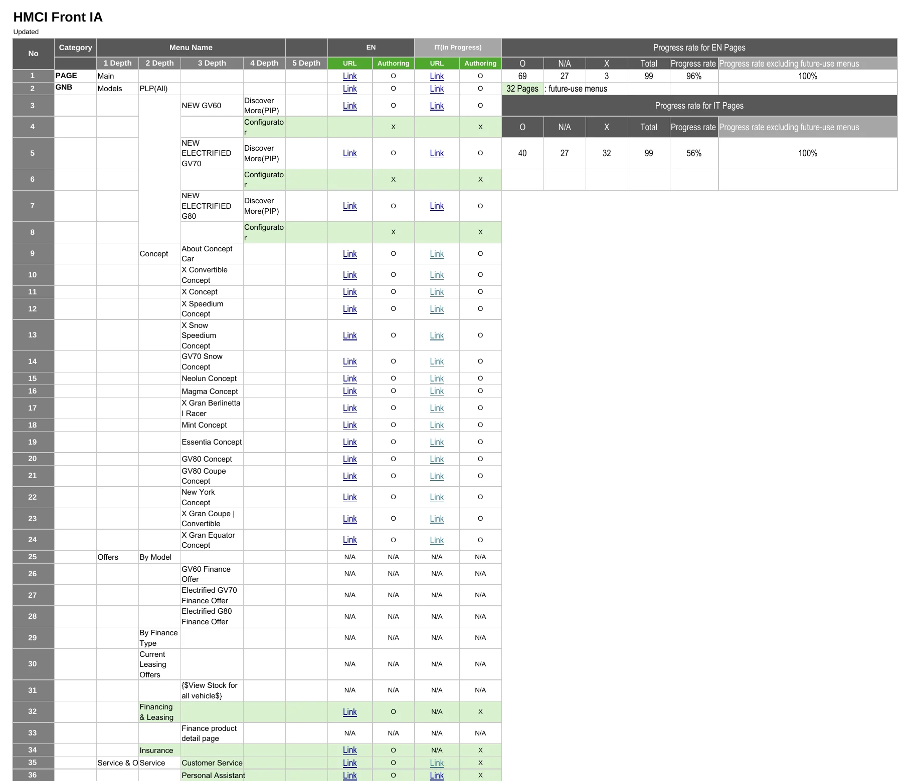
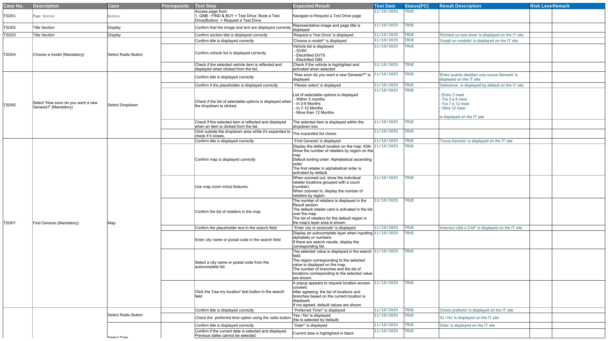

Case 04
Concentrix Catalyst
서비스 기획Service Design
Genesis EU
이탈리아 마켓을 맡아
오픈과 운영 인계까지Owning the Italy market
through launch and handover
*기여도 70%: 이탈리아 마켓 기획은 단독으로 맡았고, 개발과 디자인과 법무 검토는 팀과 현지 법인과 협업했습니다*70%: I owned planning for the Italy market; development, design, and legal review were done with the team and the local entity
문제Problem
같은 구조를 네 마켓에
그대로 복제할 수는 없었습니다The same structure could not
simply be copied to four markets
Genesis 유럽 롤아웃은 4개 마켓에 8개 사이트를 여는 프로젝트였습니다. 각 마켓은 현지어 사이트와 영어 사이트를 함께 운영했습니다.The Genesis EU rollout launched eight sites across four markets. Each market ran a local-language site alongside an English one.
저는 2025년 8월부터 12월까지 이탈리아 마켓을 맡았고, 유럽 현지에서 실무를 진행했습니다. 9인 팀의 기획자 둘 중 이탈리아 마켓은 제가 맡았습니다. 개발은 외주사, 디자인은 팀 디자이너가 맡았고, 법적 고지는 이탈리아 법인과 유럽 본부의 검토를 거쳤습니다.From August to December 2025 I owned the Italy market, working on site in Europe. Of the two planners in the nine-person team, the Italy market was mine. Development sat with an outside vendor and design with the team designers, and every legal notice passed review by the Italian entity and the European headquarters.
공통 사이트 틀은 있었지만 그대로 복제할 수는 없었습니다. 배출가스 표기 기준과 가격 하단의 법적 고지처럼 국가별 검토가 필요한 항목이 있었기 때문입니다.A shared template existed, but it could not simply be copied. Items such as emissions labeling rules and the legal notice under each price needed country-specific review.
제 역할은 이탈리아 사이트가 열릴 때까지 필요한 항목을 정의하고, 구현과 검수 상태를 확인하는 것이었습니다.My role was to define what the Italian site needed in order to launch, and to track the state of implementation and review.

4
유럽 마켓, 이탈리아 마켓 오너EU markets; Italy market owner
진단Diagnosis
반복되는 것과
마켓마다 다른 것을 나눴습니다Separating what repeats
from what varies by market
흩어져 있던 법적 고지 문구를 모아 보니 총 17건이었습니다.Gathering the scattered legal notices gave a total of 17.
이 중 12건은 여러 페이지에서 동일한 문장을 사용할 수 있었고, 나머지 5건은 트림, 그러니까 같은 모델 안에서 사양이 다른 등급마다 수치가 달라 공용으로 묶을 수 없었습니다. 공통 문구는 여러 페이지가 함께 사용하는 블록으로 만들고, 트림별 수치는 따로 관리하도록 구분했습니다.Twelve could share the same wording across pages; the other five carried figures that change by trim, the equipment grade within a model, and could not be pooled. Shared wording became blocks used by many pages, and per-trim figures were managed separately.
i18n 라벨도 같은 방식으로 정리했습니다. 화면의 버튼과 안내 문구처럼 언어마다 바꿔 넣는 문구를 말합니다. 총 426개를 모았고 이탈리아어는 423개를 채웠습니다.The i18n labels, the strings swapped per language such as buttons and helper text, were handled the same way: 426 collected, 423 filled in Italian.
법적 고지는 차량, WLTP, 기타 세 유형으로 나누고, 그 아래 차량 이미지, 가격, 제원, 충전 시간, 공통, 에너지와 배출, 전기 주행거리, 추가 안내 여덟 범주로 분류했습니다. WLTP는 유럽이 쓰는 배출가스와 연비 측정 기준입니다.The notices fell into three types, vehicle, WLTP, and other, and eight categories beneath them: vehicle image, price, specifications, charging time, common, energy and emissions, electric range, and additional information. WLTP is the European standard for measuring emissions and fuel consumption.
고지 문구 17건의 분류The 17 notices, grouped
차량Vehicle7
- 차량 이미지Vehicle image1
- 가격Price2
- 제원Specs1
- 충전 시간Charging time3
WLTP8
- 공통Common1
- 에너지와 배출Energy & emission6
- 전기 주행거리Electric range1
기타Others2
- 추가 안내Additional info2
라인업이 바뀌더라도 공통 문구 전체를 다시 손보지 않고, 트림별로 달라지는 항목만 수정할 수 있는 구조였습니다.When the lineup changes, only the per-trim items need editing; the shared wording stays untouched.
결정Decision
한 번 정의한 문구를
여러 페이지에서 재사용하도록 만들었습니다Define a notice once,
reuse it across pages
법적 고지 문구를 유형별로 분류한 뒤, 한 번 정의해 여러 페이지에서 가져다 쓰는 구조로 만들었습니다.After classifying the legal notices by type, each was defined once and pulled into every page that needed it.
Genesis 사이트는 Adobe Experience Manager, AEM을 사용합니다. AEM에서는 이렇게 재사용하는 콘텐츠 단위를 Content Fragment라고 부릅니다.The Genesis site runs on Adobe Experience Manager, AEM. In AEM a reusable content unit like this is called a Content Fragment.
운영자는 필요한 고지를 선택해 페이지에 넣고, 원본 문구를 수정하면 연결된 페이지에도 같은 변경이 반영되도록 구성했습니다.Operators pick the notice a page needs, and editing the source wording applies the same change to every linked page.
전: 페이지마다 따로Before: per page
후: 한 번 정의, 재사용After: define once
한 번 정의하면 모든 페이지에서 재사용됩니다.Define once, reuse everywhere.
Before
- 페이지마다 개별 작성Written per page
- 고지 변경 시 전 페이지 수작업Manual edits across pages
- 매번 법무 재검토Legal re-review each time
After
- 페이지 유형별 기준 정립Standard by page type
- 골라서 재사용Select & reuse
- 변경은 시스템 단위 일괄Update once, everywhere
디스클레이머 인벤토리: 페이지 유형별 전체Disclaimer Inventory: full sheet, by page type

실행Delivery
설계로 끝내지 않고
실제 페이지와 테스트까지 확인했습니다Beyond the spec:
verified the live pages and tests
구조를 정의한 뒤에는 실제 사이트에 제대로 적용됐는지 직접 확인했습니다. 페이지를 AEM에 직접 만들어 넣는 작업을 Authoring이라고 부릅니다.Once the structure was defined, I checked directly that the live site reflected it. Building pages inside AEM is called authoring.
영문과 이탈리아어 각 95개 페이지에 AEM 주소를 연결해 문서와 실제 페이지를 1대1로 대조할 수 있도록 했습니다. 아직 만들어지지 않은 페이지도 표에서 바로 확인할 수 있었습니다.Each of the 95 English and 95 Italian pages was tied to its AEM address, so the document and the live page could be compared one to one. Pages not yet built were visible in the table at a glance.
페이지마다 영문과 이탈리아어의 완료 여부를 한 표에서 관리했습니다. 아직 쓰지 않는 메뉴 32건은 따로 표시해 실제로 남은 작업과 구분했습니다.Completion of the English and Italian version of every page was tracked in one table. Thirty-two menus not yet in use were marked separately, so genuinely outstanding work stayed distinct.
항목마다 확인 단계와 기대 결과를 미리 정해 두고 이탈리아 사이트에서 순서대로 실행했습니다. 시승 신청은 19개 항목 96단계, 판매점 찾기는 10개 항목 25단계입니다. 결과 칸에는 실제로 표시된 이탈리아어 문구를 기록해 번역 검수를 겸했습니다.For each item the steps to check and the expected result were set in advance, then run in order on the Italian site: 19 items and 96 steps for the test-drive request, 10 items and 25 steps for find-a-retailer. The results column recorded the Italian text actually displayed, which doubled as a translation check.
같은 입력 세트 8가지를 영문과 이탈리아어 사이트에 각각 넣어 16케이스를 돌렸습니다. 이름에 든 하이픈, 악센트 문자, 우편번호의 하이픈과 알파벳, 이메일 128자 제한 같은 경계값이고 입력 칸은 모두 176개입니다. 결과는 정상 접수 4건, 제출 차단 12건으로 기록했습니다.Eight input sets were submitted to both the English and Italian sites, 16 cases in all, covering edge values such as hyphens in names, accented characters, hyphens and letters in postal codes, and the 128-character email limit, across 176 fields. Results were recorded as 4 accepted and 12 blocked.
Authoring 확인표Authoring tracker

테스트 시나리오: 시승 신청Test scenario: test-drive request

결과Outcome
사이트를 오픈하고
운영까지 넘겼습니다Launched the site
and handed over operations
라이브 사이트Live site
genesis.com/it은 현재 운영 중입니다.genesis.com/it is live today.
오픈 후에는 콘텐츠 조각, 화면 조각, 사이트, 폼, 법무 다섯 영역으로 운영 인계 문서를 정리했습니다. 개발 서버에서 검수 서버를 거쳐 실서버로 배포되는 순서도 함께 남겼습니다.After launch, the operations handover was organized into five areas: content fragments, experience fragments, site, forms, and legal. The deployment path from development to staging to production was documented with it.
다음 담당자가 별도의 구두 설명 없이도 같은 방식으로 수정하고 운영할 수 있게 하는 것이 목적이었습니다.The aim was that the next owner could edit and operate the site the same way without a verbal walkthrough.
전환율이나 사용성 지표는 이 프로젝트 범위에서 측정하지 않았습니다. 이 케이스에서는 사이트를 실제로 열기 위해 무엇을 구조화하고, 어디까지 직접 확인했는지를 보여줍니다.Conversion and usability metrics were not measured within this project. What this case shows is what was structured to get the site live, and how far it was verified by hand.